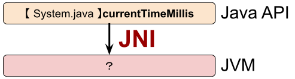
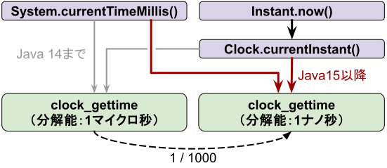
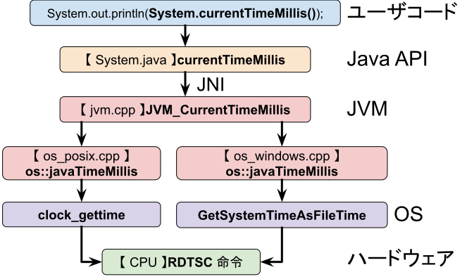
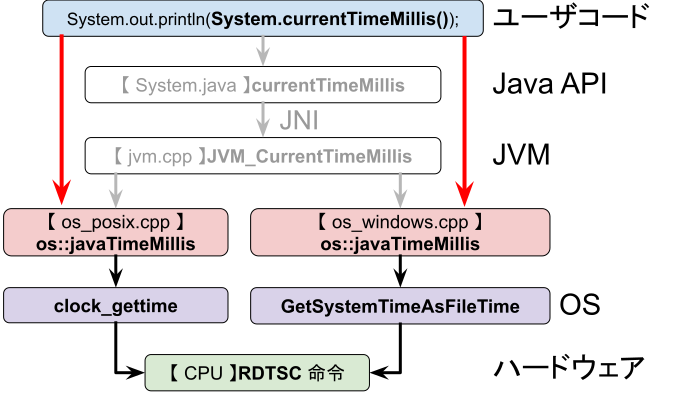
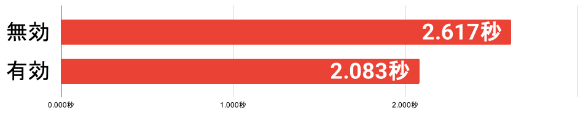

class: center, middle # native のその先へ！ ## System.currentTimeMillis() の ## 実装を見てみよう！ <img src="img/photo.jpg" width="150px;" style="border-radius: 50%; vertical-align: middle;"> @YujiSoftware --- # 目次 * System.currentTimeMillis() のおさらい * native 実装を追う * 最適化について .note[ 資料のURL https://yuji.software/currentTimeMillis/ ] --- # 注意：実装依存 * 本日の解説は、**Java 25** 時点の **OpenJDK 実装**に基づく * VM によって実装が異なる（OpenJ9 など） * 今後のバージョンアップで、実装が変わることがある * あくまで**現時点での実装がこうなっている**という点に注意 --- # System.currentTimeMillis() とは？ * **現在時刻を取得するためのメソッド** * 戻り値は、1970年1月1日 0時0分0.000秒(UTC)から経過したミリ秒を表す（[UNIX time](https://ja.wikipedia.org/wiki/UNIX%E6%99%82%E9%96%93)） * 戻り値の型は long * [2038年問題](https://ja.wikipedia.org/wiki/2038%E5%B9%B4%E5%95%8F%E9%A1%8C)の心配はない（最大値は 292,278,994 年） * **Java 1.0 から存在する** .note[ NOTE Java 8 以降では、より便利な [Insntat クラス](https://docs.oracle.com/javase/jp/24/docs/api/java.base/java/time/Instant.html)を使いましょう ] ??? ```java jshell> Instant.ofEpochMilli(Long.MAX_VALUE) $1 ==> +292278994-08-17T07:12:55.807Z ``` --- # currentTimeMillis() のコード ```java @IntrinsicCandidate public static native long currentTimeMillis(); ``` * System.java には**メソッド定義のみ** * **native 修飾子**がある * つまり、**処理はC言語で実装されている** .memo[ MEMO `@IntrinsicCandidate` については後ほど解説 ] --- class: center, middle # native の先へ行ってみましょう！ --- # 最初の一歩 * JNI<span class="remark">（Java Native Interface）</span>でネイティブ関数が呼び出される * System.currentTimeMillis() に対応するネイティブ関数は **どこにある？** <div style="text-align:center; margin-top: 50px;">  </div> --- # currentTimeMillis() のネイティブ関数 * OpenJDK <span class="remark">（https[]()://github.com/openjdk/jdk/ ）</span>の src/java.base/share/native/libjava/**System.c** にある ```cpp static JNINativeMethod methods[] = { {"currentTimeMillis", "()J", (void *)&JVM_CurrentTimeMillis}, // 以下略 ``` * **JVM_CurrentTimeMillis** 関数がマッピングされている --- class: center, middle ## JVM_CurrentTimeMillis の先は？ --- # JVM_CurrentTimeMillis の処理 ```cpp JVM_LEAF(jlong, JVM_CurrentTimeMillis( JNIEnv *env, jclass ignored)) return os::javaTimeMillis(); JVM_END ``` * JVM_LEAF は**関数を定義するマクロ** * 軽量な関数（Safepoint 不可・例外を発生させない・オブジェクトを参照しない）を定義する * 処理の概要 * **環境依存の関数 os::javaTimeMillis() を呼び出す** --- # os::javaTimeMillis() の実装はどこ？ * JVM の os 層にある <hr> * **os_posix.cpp**：POSIX系OS共通の実装 * os_aix.cpp：IBM の商用 Unix * os_bsd.cpp：BSD Unix（FreeBSD, macOS など） * os_linux.cpp：Linux（Ubuntu, CentOS など） * **os_windows.cpp**：Windowsの実装 <hr> * このうち、os_posix.cpp, os_windows.cpp に実装がある --- # os_posix.cpp での実装 ```cpp jlong os::javaTimeMillis() { struct timespec ts; int status = clock_gettime(CLOCK_REALTIME, &ts); return jlong(ts.tv_sec) * MILLIUNITS + jlong(ts.tv_nsec) / NANOUNITS_PER_MILLIUNIT; } ``` * `clock_gettime(CLOCK_REALTIME, res);` 関数で現在時刻を取得している * 詳細は `man 2 clock_gettime` コマンドで確認できる ??? Ubuntu だと、manpage-ja-dev のインストールが必要 `sudo apt-get install manpages-ja-dev` --- # clock_gettime の概要 * **時刻を取得するシステムコール** * 引数で **取得したい時間の種類**を指定する <table border="1" cellpadding="8" style="border-collapse: collapse;"> <tr> <td><span style="font-weight: bold">CLOCK_REALTIME</span></td> <td>実時間</td> </tr> <tr> <td>CLOCK_REALTIME_COARSE</td> <td>実時間 <span style="font-size: 32px;">（高速・低精度）</span></td> </tr> <tr> <td>CLOCK_MONOTONIC</td> <td>絶対時間</td> </tr> <tr> <td>CLOCK_MONOTONIC_COARSE</td> <td>絶対時間 <span style="font-size: 32px;">（高速・低精度）</span></td> </tr> <tr> <td>CLOCK_BOOTTIME</td> <td>システム起動時間</td> </tr> <tr> <td>CLOCK_PROCESS_CPUTIME_ID</td> <td>プロセス消費時間</td> </tr> <tr> <td>CLOCK_THREAD_CPUTIME_ID</td> <td>スレッド消費時間</td> </tr> </table> --- # CLOCK_REALTIME（実時間）の場合 * **1970/01/01 00:00:00 からの経過時間**<span class="remark">（Unix Time）</span>を取得 * 定義上、分解能は**1ナノ秒** * システム時刻の補正<span class="remark">（手動での時刻変更、NTPによる調整）</span>を受けて、値が飛んだり早くなったりすることがある * **時間差を取得するのには不向き** .note[ ちなみに、System.nanoTime() の場合 時刻変更の影響を受けない CLOCK_MONOTONIC<span class="remark">（絶対時間）</span>を使用している ] --- # 以前の実装 * clock_gettime関数を使うようになったのは **Java 15 から** * それまでは、**gettimeofday**関数を使っていた --- # 変更理由 * Instant.now() の**精度向上のため** * currentTimeMillis() とは実装が独立しているが、念のため同じOSの関数を使うように変更を行った <div style="text-align:center">  </div> --- # os_windows.cpp での実装 ```cpp jlong os::javaTimeMillis() { FILETIME wt; GetSystemTimeAsFileTime(&wt); return windows_to_java_time(wt); } ``` --- # os_windows.cpp の処理 * **GetSystemTimeAsFileTime** 関数を実行 * 現在時刻を取得する Win32 API * **1601/01/01 00:00:00(UTC)**からのナノ秒を100で割った値を返す（= 分解能は 100ナノ秒） * 取得した時刻を、Unix Time に変換 .memo[ なんで 1601年1月1日？ * グレゴリオ暦は400年周期 * Windows NT の設計当時、その周期の開始年が1601年だった ] --- # 参考：OS から先の実装 * ハードウェアから現在時刻を得る * 最近は、CPU の **TSC（Time Stamp Counter）**を利用 * 起動から、一定ペース（数GHz）でカウントアップしている値 * x86_64 の場合、RDTSC 命令で取得 * OSが保持している**ある時点での時刻情報と TSC を組み合わせ**て、それを補正したものを現在時刻とする --- # ここまでのまとめ  --- class: center, middle # ただし、常にこの通りに # 動いているわけではない --- # @IntrinsicCandidate ```java @IntrinsicCandidate public static native long currentTimeMillis(); ``` * @IntrinsicCandidate が付与されている * **HotSpot VM による個別最適化の対象であることを示す**アノテーション -- * 今回は、**JIT コンパイル時に最適化が行われる** * os::javaTimeMillis() を直接実行するようになる * つまり、**JNI 呼び出しがなくなる！** --- # JITコンパイル後の動き  --- # 最適化による効果 * JNI によるオーバーヘッドがなくなる <hr> * 起動オプションで最適化を無効化できる * `-XX:+UnlockDiagnosticVMOptions` `-XX:DisableIntrinsic=_currentTimeMillis` * 1億回の currentTimeMillis() の呼び出しにかかる時間 <div style="text-align:center">  </div> --- # なぜ最適化するのか * 使われる頻度が高く、パフォーマンス向上が見込めるから * **ターンアラウンドタイムが大きいと、精度が落ちるから** * OSも時刻取得関数は最適化している（vDSO） <div style="text-align:center"> </div> --- # まとめ * native の先にも処理は続いている * Java → JVM → OS → ハードウェア * API の仕様は変わってなくても、実装は変わっていることがある * @IntrinsicCandidate アノテーションがある場合、最適化による変化に注意 <br> * **ぜひ、興味のある native メソッドを読んでみましょう！** --- class: center, middle # native のその先へ！ ## System.currentTimeMillis() の ## 実装を見てみよう！ <img src="img/photo.jpg" width="150px;" style="border-radius: 50%; vertical-align: middle;"> @YujiSoftware --- # 参考資料 * [Java API Documentation Version 1.0.2 - §1.18 Class System](https://javaalmanac.io/jdk/1.0/api/java.lang.System.html#10810) * [Java Native Interface仕様](https://docs.oracle.com/javase/jp/24/docs/specs/jni/index.html) * [Why is the Win32 epoch January 1, 1601? - The Old New Thing](https://devblogs.microsoft.com/oldnewthing/20090306-00/?p=18913) * [高解像度タイム スタンプの取得 - Win32 apps | Microsoft Learn](https://learn.microsoft.com/ja-jp/windows/win32/sysinfo/acquiring-high-resolution-time-stamps) * [Linux だと、Instant.now() の分解能が Java のバージョンが上がるごとによくなっている - Qiita](https://qiita.com/YujiSoftware/items/39c0d7922947459f853d) --- # アンケートにご協力をお願いします <div style="display:flex; justify-content: space-around; text-align: center;"> <div> <br> 全体アンケート </div> <div> <br> セッションアンケート </div> </div>